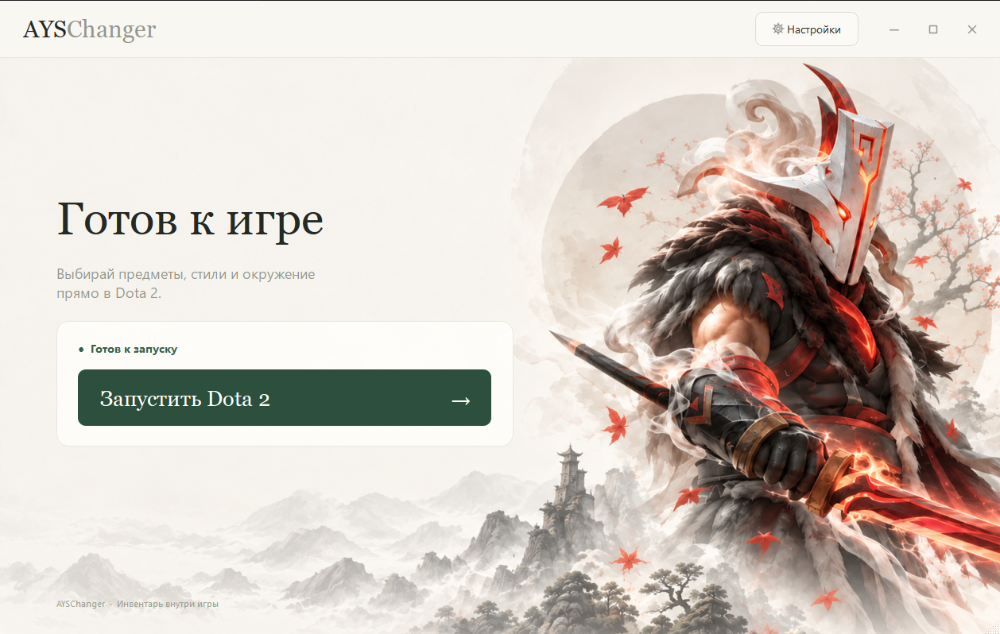

Посмотрите разницу
Реальная запись из игры. Сверху — AYSChanger. Снизу — DEFAULT.
Видео запускается по нажатию
Предметы выбираются в инвентаре самой Dota 2. Косметические изменения отображаются локально на вашем компьютере. Они не добавляют предметы на Steam-аккаунт.
От скачивания
до вашего образа
Запустите Dota 2 через AYSChanger. Выбирайте предметы, стили и окружение в инвентаре самой игры — привычным способом.

Откройте лаунчер
Скачайте и запустите AYSChanger.exe.
Проверьте папку игры
Если Dota 2 не определилась автоматически, укажите папку в настройках.
Запустите Dota 2
Откройте игру через лаунчер и подождите 10–30 секунд.
Соберите свой образ
Выбирайте и надевайте предметы в инвентаре Dota 2.
Как удалить ченджер
Очистка находится в настройках лаунчера
- Полностью закройте Dota 2.
- В AYSChanger откройте «Настройки» → «Очистить ченджер» и подтвердите очистку.
- Дождитесь сообщения об успешном завершении. Удаляются локальные данные ченджера и сохранённый выбор предметов; очищается кэш инвентаря с его локальными предметами.
- Закройте лаунчер и удалите скачанный AYSChanger.exe, если больше не планируете им пользоваться. Сам EXE кнопка очистки не удаляет.
- Запустите Dota 2 обычным способом через Steam. Игра заново получит настоящий инвентарь аккаунта.
Если очистка завершилась ошибкой, сохраните текст сообщения: успешное удаление в этом случае не подтверждено. Настройка пути к Dota может остаться на компьютере после очистки.
Помогите сделать AYSChanger лучше
Это публичная тестовая версия. При сообщении об ошибке укажите версию ченджера, героя, предмет и действия перед сбоем. По возможности приложите скриншот.
Новости и обновления — в нашем Telegram.
Telegram AYSChangerПо кнопке скачивания доступна версия 1.0.77.1.